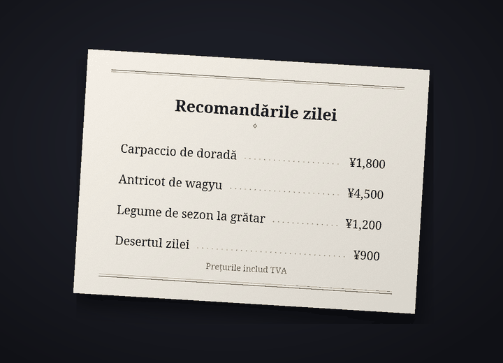

Bot de traducere pentru chat pe Discord
Pe Discord, fiecare vorbește în limba lui
Cozirom este un bot de Discord care traduce chatul în limba celuilalt. După ce îl pornești, mesajele tale sunt postate traduse, sub numele și poza ta de profil, iar textul din imagini e tradus și el.
Traducerile sunt făcute de IA (Claude de la Anthropic). Pot conține greșeli, așa că pentru lucrurile importante verifică și originalul.
Ce face botul
Un singur bot traduce text, imagini și voce
Limitele planurilor se numără în traduceri. Un mesaj tradus într-o limbă se numără ca 1.
6 funcții
În traduceri
Traducere automată
Rulezi
/traducere porneșteo singură dată, iar mesajele tale de pe acel server sunt postate în cealaltă limbă, sub numele și poza ta de profil. Originalul rămâne cu litere mici sub traducere, iar butonul arată tot originalul.
arată tot originalul.Traduceri1 pe mesaj
Text din imagini
Meniuri de restaurant, ecrane de joc, meme-uri: dacă o imagine are text, acesta e citit și tradus. Se deschide din pictograma
 de sub imaginile celor care au pornit traducerea sau cu clic dreapta. Rezultatul îl vede doar cine l-a cerut, iar imaginile fără text nu se numără.
de sub imaginile celor care au pornit traducerea sau cu clic dreapta. Rezultatul îl vede doar cine l-a cerut, iar imaginile fără text nu se numără.TraduceriDe obicei circa 9 pe imagine
Traducere pe imagine
Din pictograma
 primești o copie a imaginii în care textul original e șters, iar traducerea e desenată în locul lui. La început fontul e „Ca originalul”, apropiat de literele originale, și poți alege gratuit dintre cel mult 10 seturi de fonturi, cum ar fi „Cu serife”, „Scris de mână” și „Benzi desenate”. Merge cel mai bine pe text orizontal, ca în capturi de ecran, meme-uri, ecrane de joc și meniuri, iar rezultatul îl vede doar cine a apăsat.
primești o copie a imaginii în care textul original e șters, iar traducerea e desenată în locul lui. La început fontul e „Ca originalul”, apropiat de literele originale, și poți alege gratuit dintre cel mult 10 seturi de fonturi, cum ar fi „Cu serife”, „Scris de mână” și „Benzi desenate”. Merge cel mai bine pe text orizontal, ca în capturi de ecran, meme-uri, ecrane de joc și meniuri, iar rezultatul îl vede doar cine a apăsat.TraduceriDe obicei circa 19 pe imagine


Exemplu: fotografia originală (un meniu în japoneză) și aceeași fotografie cu textul șters și traducerea în română desenată în locul lui cu fontul „Cu serife”. Mesaje vocale
Dă clic dreapta pe un mesaj vocal trimis din aplicația de telefon ca să vezi ce s-a spus și traducerea. Se transcriu mesaje de până la 3 minute, iar mesajele în care nu se vorbește nu se numără.
Traduceri1 pe secundă, plus traducereaUn mesaj de 10 secunde: de obicei 11
Patru tonuri
Slang, Relaxat, Prietenos sau Formal, ales pentru fiecare server. Per tu cu prietenii, per dumneavoastră într-un loc nou. Cu planul Guest (gratuit) ai toate patru în primele 14 zile, apoi tonul prietenos.
TraduceriPlătite: toate patru. Free: primele 14 zile
31 de limbi
Traducerea funcționează în 31 de limbi. Interfața și numele comenzilor botului apar în 30 de limbi din Discord, așa că și celălalt îl configurează în limba lui.
Traduceri31 pentru traducere, 30 pentru interfață

Cum începi
Trei pași, iar mesajele tale apar traduse sub numele tău
Adaugă botul pe server
Un administrator al serverului adaugă botul. Linkul de invitație îl ceri pe serverul de asistență.
Pornește traducerea
Cine vrea să fie tradus rulează
/traducere porneștepe acel server. Botul ghicește limba ta și limba celuilalt și deschide panoul de setări. Dacă nu sunt corecte, schimbă-le din meniurile derulante.Scrie ca de obicei
Scrie ca de obicei, iar traducerea apare sub numele tău. Începe cu planul Guest (gratuit) și schimbă planul din pagina de planuri când ai nevoie de mai mult.
Confidențialitate
Mesajele de tradus și imaginile ajung doar la Anthropic (SUA), iar sunetul mesajelor vocale doar la Google (SUA). Botul păstrează originalul unei traduceri postate 14 zile și traducerile din cache 30 de zile și nu stochează imagini, sunet sau textul citit din ele. Conținutul conversațiilor nu ajunge niciodată în loguri, iar cu /traducere șterge-datele îți ștergi datele oricând.